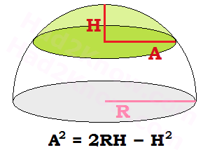

Spherical Cap:
In spherical geometry, a cap is section of a sphere obtained by slicing it
with a plane. A spherical cap has a circular base and a dome that is flatter
than a hemispherical dome. (A hemisphere is spherical cap obtained by cutting
the sphere in half.)
You can figure the volume and surface area of a spherical cap if know its height
and either the radius of its base or the radius of the larger sphere. The
calculator below will compute the surface area and volume if you input the
height H, and either the base radius A or sphere radius R. You can also apply
the formulas described below.
Volume Formula for a Spherical Cap:

The equation that relates A, R, and H is
A2 = 2RH - H2
To find the volume in terms of A and H, the equation is
Volume = (pi/6)H(3A2 + H2)
To find the volume in terms of R and H, the equation is
Volume = (pi/3)H2(3R - H)
(Pi is the mathematical constant 3.14159265358...)
Surface Area Formula for a Spherical Cap
The surface area formula excluding the base is
Surface Area = (pi)(A2 + H2), or
Surface Area = 2(pi)RH.
The formula for its total surface area (including the base of the cap) is
Surface Area = (pi)(A2 + H2) + (pi)A2, or
Surface Area = 2(pi)RH + (pi)(2RH - H2).